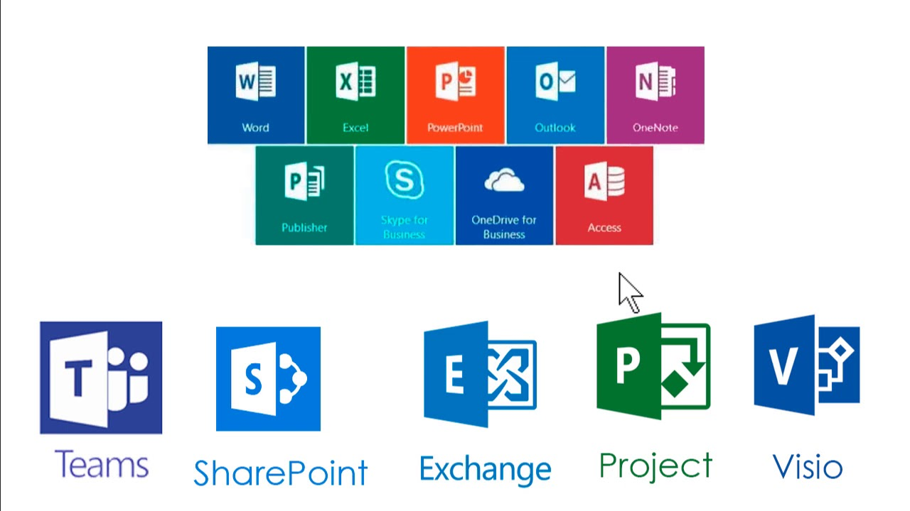

| INICIO |
CONCEPTOS BASICOS |
CLASIFICACION |
SOFTWARE LIBRE Y COMERCIAL |
SOFWARE COMERCIAL |
DESCARGAS |
Conceptos básicos
Que es software educativo
Es un programa informatico que se utiliza como herramienta pedagogica para apoyar el proceso de
ensenanza aprendizaje con la finalidad de que los usuarios, en este caso, estudiantes desarrollen habilidades cognitivas.
Este tipo de software promueve el aprendizaje autonomo y busca enriquecer, la experiencia educativa tradicional. Una de sus principales
caracteristicas es la interactividad, de modo que cuando el usuario ejecuta determinada accion, el programa de computadora favoreceel intercambio
instantaneo de informacion.

Clasificacion del software
Enfoque de instruccion asistida. El programa es disenado y creado para dirigir el proceso de aprendizaje a traves de una secuencia didactica
prestablecida. Estas secuencia puede enfocarse en un tema especifico.
Enfoque de software abierto. Los programas no cuentas con una secuencia didactica preestablecida . Son disenados para que los usuarios los
exploren de forma creativa de acuerdo con sus intereses. Una vez que se conocen sus reglas y posibilidades.